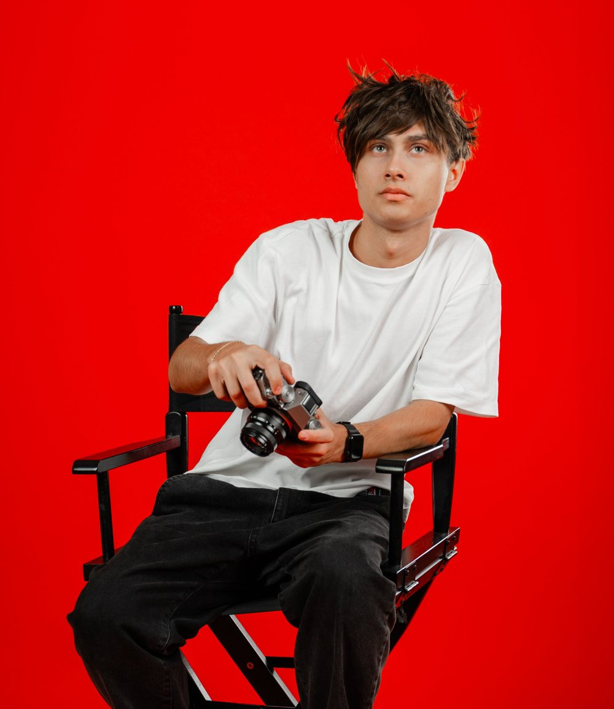
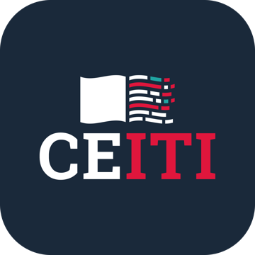
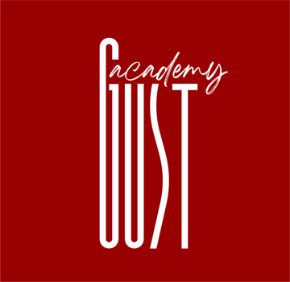

04 · Cine sunt
Între cod și cadru
Creator digital. Am venit în multimedia din IT și încerc să îmbin cele două lumi.
-

Computer Science Absolvent Centrul de Excelență în Informatică și Tehnologii Informaționale -

Editor Video La PRASADA lucrez pe proiectele Just cu Gust și Gust Academy: montaj și idei pentru rețelele sociale. -
 Student, Anul I · Producție Multimedia Facultatea de Jurnalism și Științe ale Comunicării, USM
Student, Anul I · Producție Multimedia Facultatea de Jurnalism și Științe ale Comunicării, USM
?De ce am ales tocmai multimedia?
07 · De la concept
Totul a pornit de la bau BAU
Un singur proiect, la Managementul Experienței: YUTUBAU, un Bau Bau vlogger pentru cardurile de colecție Electric Spring. În loc de slide-uri, am construit un site. Mecanica lui a devenit baza întregului portofoliu.
8 slide-uripersonaj în Fireflycard animatprimul proiect
Deschide proiectul 01 →

?Din ce este făcută o astfel de prezentare?
10 · La realizare
Un proiect a devenit portofoliu
01

bau BAUpersonaj și card animat
02
Șase roluriscurtmetraj · storyboard
03
Pascaru Productionrebranding · brandbook
04
Etajul 3reclamă · scenariu și animatic
05
Colocviulcreativitate și imaginar

Clipuri editate de minepodcastul Just cu Gust, Gust Academy, after movie-uri
Site-uri realizate în trecutde exemplu bibl.ceiti.md ↗
🔑
Proiecte privatevizibile doar cu cheie de acces
?Este acest portofoliu cu adevărat creativ?
Mulțumesc pentru atenție

PrezintăHodoroja Sorin · anul I
ColocviuMediacor, USM · 20 noiembrie 2026
SpecialitateaProducție Multimedia · USM, FJȘC